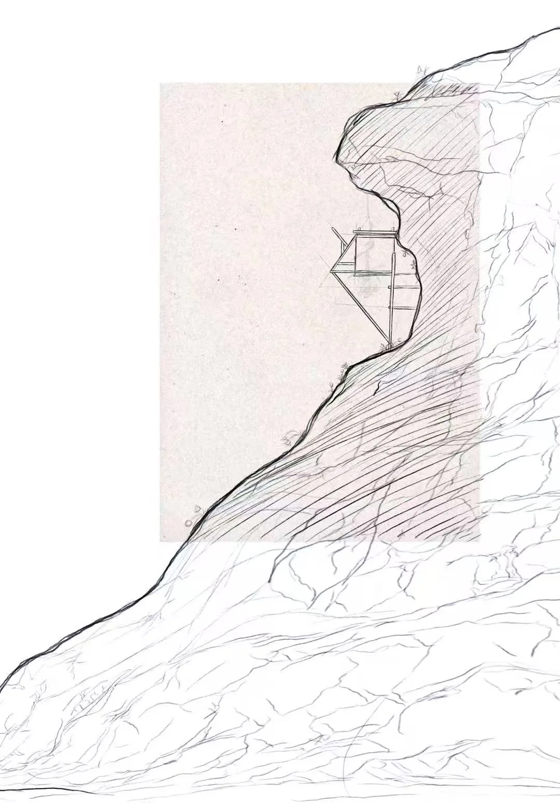

A-05 · Tectonic Model
Flower in the Rock
A study of fragile inhabitation emerging from heavy, eroded terrain.

- Year
- 2025
- Location / Field
- Material study
- Role
- Independent study
- Recognition / Method
- Cardboard · light timber
Delicate structure against geological mass.
Flower in the Rock explores the interface between architecture and raw natural forces, taking inspiration from plants that emerge from seemingly barren stone.
Layered corrugated cardboard forms a concave cliff with dramatic protrusions and crevices. Light timber interventions act as the flower: viewing platforms cantilever outward, dwellings nest into recesses, and a skeletal frame reaches above the peak.
The material contrast produces the central tension of the model—heavy earth against fragile architecture, permanence against growth, and shelter against exposure.